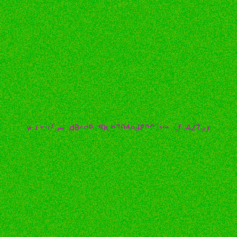
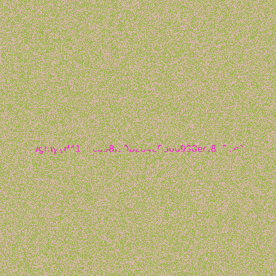

Invisible Ink
Description
The flag is hidden somewhere in this GIF. You can't see it? Must be written in transparent ink.
Challenge Files
Download Challenge.gifSolution
- Initial Analysis:
- Given a GIF file that presumably contains hidden information
- The challenge name and description hint at transparency/visibility tricks
- "Invisible ink" suggests parts of the image might be hidden or partially visible
- Using Stegsolve: We used Stegsolve, a popular steganography analysis tool. The first step was analyzing the GIF file to extract individual frames, and we found 2 distinct frames.
- Frame Analysis: We downloaded both frames separately and used Stegsolve's color manipulation capabilities to enhance visibility. Each frame contained partial letters of the flag, but neither frame alone contained the complete flag.
 
- Flag Recovery: The key insight was that the flag was split across two frames. We used Stegsolve's frame combiner feature to merge the two frames, revealing the complete flag.

Flag
wgmy{d41d8cd98f00b204e9800998ecf8427e}
Tools Used
- Stegsolve (Primary tool)
- Frame extraction
- Color plane analysis
- Frame combination